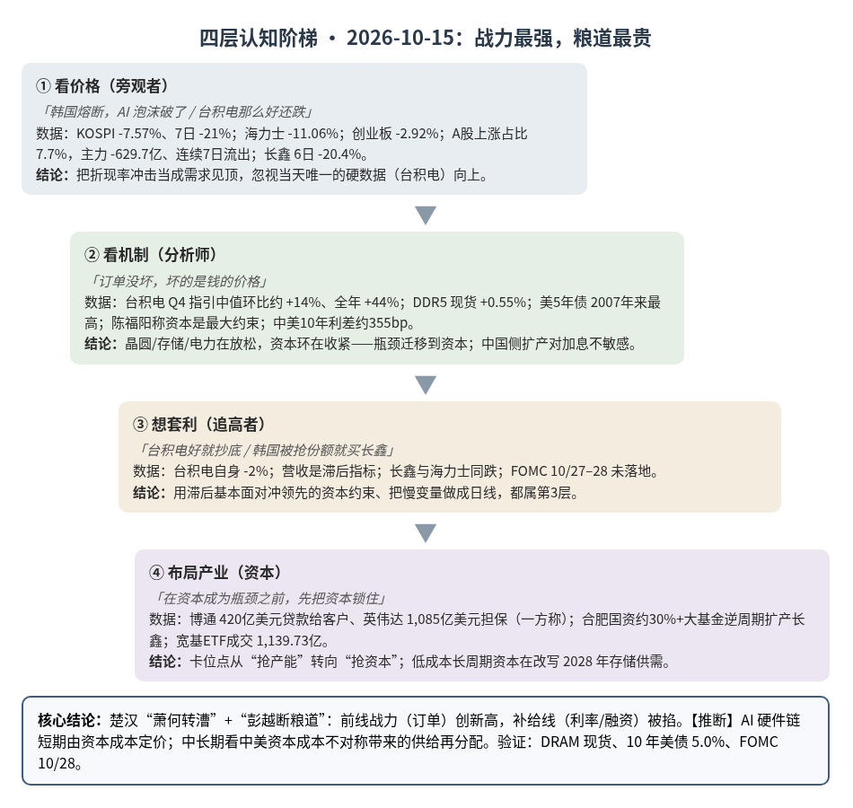
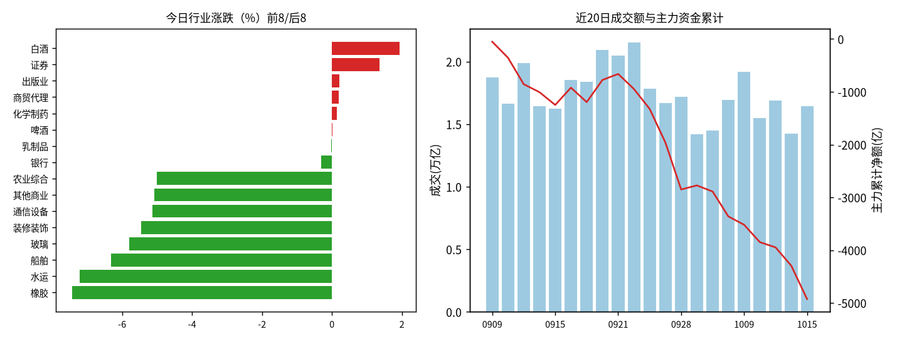
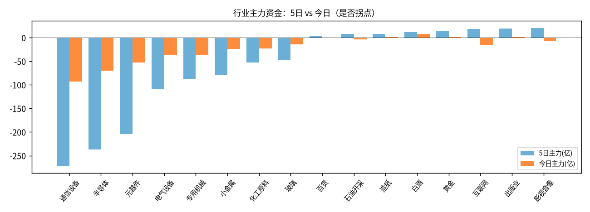

A股投研日报 · 2026-10-15（四层认知版）
台积电交出创纪录季报、全年指引上修，KOSPI 却单日 -7.57%、A 股逾 5,100 只个股下跌——AI 硬件链的约束瓶颈正从“晶圆/存储/电力”迁移到“资本成本”：杀的是估值和融资能力，不是订单；而在资本成为瓶颈的世界里，资金最便宜的一方（中国国资驱动的存储扩产）反而在拉长供给，这是比单日暴跌更重要的慢变量。
本报告为基于公开数据的研究分析，不构成投资建议。
今日市场概况
数据管道速览（Tushare 收盘数据，规则生成，正文判断见下文）
- 风险偏好偏弱，风格偏大盘/价值防御。 上证指数-1.59%收3,707.48，但盘中最深-2.45%（低点3,674.82），近5日上证50 -1.42%、创业板指 -8.35%、科创50 -6.65%，大小盘/成长价值剪刀差 6.1 个百分点。
- 资金面：全A主力（大单+特大单）今日净额 -629.7 亿，近21个交易日中17天为净流出，当前连续7天流出；成交 16,457 亿，较上日+15.4%，但低于20日均值 17,494 亿。
- 主线变化：此前领涨的通信设备、半导体、元器件近5日合计主力净流出 -715 亿，是本轮调整的主要卖压来源；今日涨幅居前的白酒、证券、出版业资金体量有限（合计 +11.2 亿）。【推断】当前更像“高位科技去拥挤 + 低位题材轮动”，而非新一轮趋势行情，反弹的持续性需要成交回到 2.0 万亿以上来确认。
变化点
方法：四层认知阶梯 + 历史周期律（
cognitive-ladder.md/references/cases.md）。市场数据来自 Tushare Pro（见附录）；产业/宏观数据附来源链接；推断=本文判断；“一方称”=未经独立核验的单方说法；“推算”=本文用公开数字计算。不构成投资建议。
一、世界观定位（先问三句）
- 属于哪一阶段？三国鼎立→楚汉之争过渡带，今日是一个典型的“楚汉日”（无阶段切换信号，但楚汉层权重被强化）。
- 三国层（科技/产能）实物端仍强：台积电 Q3 营收 467.2 亿美元（季增 16.2%）、毛利率 66.4%，Q4 指引 523–543 亿美元，全年美元营收增速上调至约 44%，CEO 称「没有看到任何放缓迹象」源源。
- 楚汉层（金融）决定了当天价格：美国 9 月 CPI 同比 3.7%（前值 3.4%），10 年美债一度 5.314%、2 年 4.93% 源；5 年美债盘中 5.153%，为 2007 年以来最高 源；联储 9 月已加息至 3.75%–4.00%，期货隐含年内至少再加一次的概率一度 >95% 源。
- 命中哪个历史原型？——在既有“萧何转漕”（资本/后勤决胜，案例7）基础上，补一个对手侧结构：楚汉荥阳-成皋相持中「项羽战力最强、却被彭越反复断粮道」。
- 剥结构：前线战力（订单、技术、台积电毛利率）最强的一方，被后方补给成本（利率、融资）拖住；补给最稳的一方（关中萧何）虽战力较弱却能持续出兵。
- 为何优于只用“萧何转漕”：昨日原型只描述“谁有粮饷”；今日新信息是同一天出现“战力创新高”与“补给线被掐”的背离，需要把对手侧的断粮机制写进来——两者同属楚汉层，属细化而非替换推断。
- 验差异：现代版“粮道”是全球美元利率与信用市场，被掐的是整个 AI 资本开支链而非一国；中国侧利率与融资结构不同（见变化二），所以同一冲击对中美两侧产能的影响不对称推断。
- 领先指标指向？ 金融约束信号增强：美 5 年债收益率盘中创 2007 年以来最高、美元指数 18 个月新高后回落 源、现货金价 +1.2% 至约 4,156 美元 源。纪律：方向≠节奏。回退条件：若 10 年美债连续回到 4.8% 以下且 CSP 上调资本开支、DRAM 现货不跌，则瓶颈回到物理端，“资本约束”判断降级。
二、变化一（主变化）：AI 硬件链“杀估值不杀订单”——瓶颈从物理产能迁移到资本
第1层 · 看价格
- 标志性话语：「韩国熔断了，AI 泡沫破了」「台积电那么好还跌，科技没救了」。
- 数据：KOSPI 收跌 7.57% 至 5,554.22，连跌 7 日累计 -21%；三星电子 -9.48%、SK 海力士 -11.06%，7 个交易日分别 -24%、-31%；外资主板净卖 3.63 万亿韩元，连续 8 日净卖；KOSPI 与 KOSDAQ 同日熔断为 7/29 以来首次 源。日经 -4.90% 源；台积电台股收跌约 2% 源。A 股：创业板指 -2.92% 收 2,783.17（5 日 -8.35%、20 日 -17.04%），上涨 430 家/下跌 5,108 家（上涨占比 7.7%，近 10 日最低），全 A 主力净额 -629.7 亿、连续 7 日净流出；通信设备 -5.1%/主力 -93.4 亿、半导体 -3.1%/-70.2 亿（连续 7 日流出）、元器件 -2.4%/-52.6 亿（Tushare，见附录）。
结论：第1层看到的是“价格崩+熔断”，并把它等同于 AI 需求见顶；但当天唯一的硬基本面新闻（台积电）是向上的。
第2层 · 看机制
- 标志性话语：「订单没坏，坏的是钱的价格——当卖方要借钱给买方才能卖货，瓶颈就已经是买方的资本」。
- 瓶颈推导（约束理论：把每一环换成“能否继续扩张算力”的同一问题）：
- ①晶圆/代工环（未约束，且在放松）：台积电 Q4 指引中值 533 亿美元，较 Q3 环比约 +14%（推算）；2026 资本开支维持 600–640 亿美元，并称 2026–2028 AI 相关投入将“显著高于”过去三年 源。博通 CEO 陈福阳称晶圆短缺可能在 2028–2029 年缓解 源。
- ②存储环（物理价格未破）：10/15 DDR5 16Gb 现货均价 60.433 美元、当日 +0.55%，DDR4 16Gb 83.66 美元、+0.06% 源——股价 7 日跌三成，现货价没有跟跌。
- ③电力环：陈福阳称电力供给也会随新设施上线改善（一方称，无量化）源。
- ④资本环（新的约束）：陈福阳原话「最大的约束可能是资本」，同时称算力需求超过供给的状态可能持续到 2029–2030 年 源。供应商融资已成常态：博通向 Anthropic 提供最高 420 亿美元贷款用于租用其芯片 源；英伟达对客户提供合计 1,085 亿美元信用担保（一方称 IFR）源。Gartner 口径：2026 年 AI 基建投资约 1 万亿美元、2027–2030 再投 6 万亿，覆盖资本成本需 2030 年 8.5 万亿美元收入，而数据中心相关收入预计仅约 3.6 万亿（一方称，转引自 Herald）源——收入覆盖率约 42%（推算）。
- 推导结论：晶圆、存储、电力三环要么在放松、要么价格未破，唯一边际收紧的是资本环（利率 5%+、融资需供应商兜底）。按约束理论，系统产出由最紧一环决定，因此当前 AI 硬件链的“限速器”已从物理产能转为资本成本推断。
- A 股传导：通信设备+半导体+元器件今日主力合计 -216.2 亿，占全 A 净流出约 34%（推算）；光模块等对海外 CSP 资本开支最敏感的环节领跌（Tushare 个股行情：中际旭创自 9/30 起 6 个交易日 -18.7%、新易盛 -21.3%，推算）——A 股与 KOSPI 抛的是同一个“折现率因子”推断。
结论：机制层是“需求仍超供给 + 物理瓶颈在放松 + 资本瓶颈在收紧”。台积电的强是对过去订单的确认，利率与融资是对未来扩张速度的定价，两者不矛盾推断。
第3层 · 想套利
- 标志性话语：「台积电超预期，明天 AI 链必反弹」「跌三成了，抄底存储/光模块」。
- 想用“台积电好→抄底”→发现台积电自己当天也跌约 2%、ADR 盘前 -1.5% 源——好业绩已不是价格的决定变量；代工营收是滞后指标（反映 6–12 个月前的订单，同案例3“订单≠收入”逻辑的反向版）。
- 想赌“利率见顶”→ 10 年美债 10/15 已回落至约 5.10% 源，但 10/27–28 FOMC 尚未落地、年内加息仍是基准情形；押注单一宏观数据点等于把楚汉层的十年结构做成日线推断。
- 想抄 A 股科技 → 全 A 主力连续 7 日流出、半导体连续 7 日流出、上涨占比 7.7%，资金尚无任何连续转正迹象。
结论：用滞后的基本面去对冲领先的资本约束 = 第3层。路径被“FOMC 日历 + 资金未转正”焊死。
第4层 · 布局产业
- 标志性话语：「在资本成为瓶颈之前，先把资本锁住」。
- 用资产负债表卡位的卖方：博通把投资级信用借给未评级客户、与 Apollo/Blackstone 搭平台融资 20GW 以上算力（一方称 IFR）源；英伟达信用担保——这是“萧何转漕”的纯形态：卖方亲自修粮道。代价是风险回流到卖方报表（博通 CDS 上行，一方称）。
- 提前锁低成本长债的买方：与案例7字节 SOFR+68bp 长期贷款同构——在利率 5% 之前锁定融资的玩家，现在拥有对手买不到的“粮”推断。
- 维持资本开支节奏的代工龙头：台积电不跟随股价调整资本开支（600–640 亿美元维持）、亚利桑那累计投资 2,650 亿美元 源。
结论：第4层的卡位点从“抢产能”转向“抢资本/锁融资”；物理瓶颈的拥有者（代工、存储）短期反而被资本瓶颈压估值。
检查清单应用：缺口性质 = 物理缺口（晶圆/存储）为“自然（建厂周期 2–3 年）+人为（HBM 产能倾斜）”混合，正在放松；资本缺口为人为/政策缺口（联储加息、通胀粘性），可随一次 FOMC 或一组数据快速反转——对资本缺口要左顾右盼，不能当成长期结论。替代弹性 = 融资端替代弹性高（银行贷款→供应商融资→私募信贷→IPO，如 Anthropic 上市在即）；需求端，英特尔 CEO 提到更便宜的中国模型在获客（一方称）源，高价算力存在被“更省算力的模型”替代的弹性。领先 vs 滞后 = 领先：10 年/5 年美债、FOMC 定价、CSP 资本开支指引、GPU 租赁价、合同取消、DRAM 现货；滞后：台积电月度/季度营收、A 股单日涨跌与资金流。
与案例库交叉验证（变化一）
| 案例 | 案例核心论点 | 今日数据 | 判定 |
|---|---|---|---|
| 案例7 字节296亿贷款（楚汉层） | 融资时机=alpha；利率决定谁能继续烧 | 美 5 年债 2007 年来最高；陈福阳称资本是最大约束；供应商融资常态化 | 强化：资本从“背景条件”升级为“绑定约束” |
| 案例3 装片机/键合机 | 订单≠收入，设备订单领先收入 6–12 个月 | 台积电创纪录但股价跌；资本开支维持未上调 | 强化：市场交易领先变量，滞后的营收无法止跌 |
| 案例4 AI用铜 | 机会在加工环节的提价权 | 今日无新的铜加工费/铜箔提价数据 | 待补充，不作判断 |
| 案例8 另类数据 | 过程数据领先结果数据 | DRAM 现货（过程）未跌 vs 股价（情绪）暴跌 | 方法论强化：用现货/合约价区分“需求坏”与“折现率坏” |
三、变化二（中国账本）：韩系存储“被双杀”，长鑫同跌——共同因子盖过份额迁移，但中美资本成本不对称是慢变量
第1层 · 看价格
- 标志性话语：「中国长鑫抢了三星海力士的份额，所以韩股崩」「那长鑫该涨啊，怎么也跌？」
- 数据：韩媒将三星/海力士下跌部分归因于长鑫（CXMT）扩产与技术追赶 源；同日长鑫科技（688825）收 43.59 元、-5.24%，自 9/30 的 54.79 元起 6 个交易日 -20.4%，同期主力（大单+特大单）累计净流出约 69.9 亿元；兆易创新 6 个交易日 -21.4%（Tushare 个股 daily/moneyflow，推算）。
第2层 · 看机制
- 标志性话语：「份额迁移是年度变量，折现率是日线变量；今天交易的是后者，但真正改变格局的是前者」。
- ①今日价格机制（共同因子）：若下跌主要由“份额从韩国流向中国”驱动，长鑫应相对走强；实际是长鑫与海力士同向下跌（6 日 -20% vs 7 日 -31%），说明当天主导变量是全球存储资产的折现率/风险偏好，而非份额再分配推断。
- ②供给机制（慢变量）：长鑫月产能 2026 年初约 28–30 万片、年底预计约 35 万片，2027 年约 42 万片、2028 年底冲击 50 万片，届时全球 DRAM 产能占比约 17%（一方称，界面新闻）源；高盛预测其月产能 2026 年 27 万片→2028 年 44.7 万片→2030 年 66.5 万片，2028 年传统 DRAM 供给达三星的 41%、海力士的 50%，可满足中国约 50% 的 DRAM 需求（一方称）源。
- ③资本成本不对称（今日新增的关键机制）：中国 10 年国债 1.6485%、央行当日 7 天逆回购利率 1.40% 并以 7,000 亿元 6 个月买断式逆回购实现单日净投放 2,450 亿元；同日美 10 年债收于 5.194%（10/14）源——中美 10 年利差约 355bp（推算）。长鑫股东中合肥国资合计约 30%、并有大基金二期（一方称，界面）源。含义：当资本成为全球 AI 硬件链的瓶颈时，中国侧的扩产资金对美联储加息不敏感，韩美侧扩产却要付 5%+ 的资金成本——供给扩张的相对速度向中国倾斜推断。
- ④周期机制（风险端）：高盛称 2026 年 DRAM 供需缺口 4.9%、为 2011 年以来最高，真正的产能释放拐点在 2028 年；彭博分析师则认为短缺 2027Q1 大幅缓解、最早 2028 年过剩，若 CSP 削减资本开支可能提前至 2027 年（均为一方称）源。CNBC 亦提到市场担忧最早 2029 年出现全球存储过剩 源。
结论：今天的跌是“共同因子”，但中长期变化是“低成本资本驱动的中国存储供给扩张”——它同时意味着国产替代推进与全球存储涨价周期缩短推断。
第3层 · 想套利
- 标志性话语：「韩国被中国抢份额，那就买长鑫」。
- 发现①：长鑫与海力士同跌，“份额迁移”尚未成为可交易的相对收益；②长鑫固定资产账面约 1,830 亿元、年折旧超百亿元，价格下行周期中利润弹性向下同样巨大（界面，一方称）源；③高盛目标价隐含毛利率由 2025 年 41% 升至 2030 年 82% 的假设（一方称）源——这是“价格持续高位”与“扩产翻倍”同时成立的假设，二者内在冲突推断；④HBM 与海外龙头仍有代差。
- 与案例9（宇树筹码结构）同构的问题：7/27 上市首日开盘涨幅一度 471.59%（界面）——上市后流通盘/解禁节奏是重要变量，具体解禁日历待补充。
结论：把“国产替代长期逻辑”做成“韩股暴跌次日的短线对冲”= 第3层；份额迁移要等相对表现与订单数据确认。
第4层 · 布局产业
- 标志性话语：「在别人付 5% 利息时用 1.6% 的钱扩产」。
- 国资与产业基金早已卡位：合肥国资（约 30%）与大基金二期在 2022–2024 存储寒冬逆势注资，长鑫月产能从不足 10 万片扩至 30 万片（界面）源——典型“萧何转漕”：在对手减产时持续供粮。
- 扩产订单向上游传导：界面列举激光热处理设备、静电卡盘/陶瓷加热盘等零部件、G5 级湿电子化学品、2.5D/3D 封装等国产环节在长鑫扩产中获得验证机会（一方称，格局描述，不构成个股判断）。
- A 股市场的“后勤”：今日宽基 ETF 合计成交 1,139.73 亿元，沪深 300ETF 易方达（510310）成交超 190 亿元、为 2026/1/28 以来最高，创业板 ETF、科创 50ETF 成交均破 100 亿元，日内三波放量（每经，“大资金抄底”为媒体口径）源；上证 50 仅 -0.42%、沪深 300 -1.23%，明显强于中证 1000 的 -3.28%（Tushare）——指数权重有资金托底，但个股宽度仍创新低。
结论：中国侧的第4层玩家是低成本、长周期的国有资本；它们的扩产不随联储节奏调整，这是“三国层自给率”与“楚汉层资本成本”在同一个产业里的交汇点。
检查清单应用：缺口性质 = 全球通用 DRAM 缺口主要来自三大原厂向 HBM 倾斜的人为缺口（同案例2钾肥：寡头控量可被新进入者填补），长鑫扩产正在填这个缺口；HBM 为技术壁垒型准自然缺口，中国侧短期难填。替代弹性 = 通用 DDR4/DDR5 在国内客户中替代弹性高（招股书客户含腾讯、阿里云、字节、联想、小米，一方称），HBM 替代弹性低；DDR4 现货已横盘（16Gb +0.06%、8Gb 持平）源，提示通用 DRAM 价格动能在减弱。领先 vs 滞后 = 领先：长鑫产能爬坡、国内 DRAM 设备进口、DDR4/DDR5 现货与合约价、中美利差；滞后：长鑫季度利润、韩国存储股价。
与案例库交叉验证（变化二）
| 案例 | 案例核心论点 | 今日数据 | 判定 |
|---|---|---|---|
| 案例2 钾肥（人为缺口可反转） | 寡头控量造成的缺口随时可反转 | 长鑫 2028 年传统 DRAM 供给或达海力士 50%（高盛，一方称） | 强化：人为缺口正在被低成本新进入者填补 |
| 案例9 宇树（筹码结构） | 上市后流通盘与解禁决定价格节奏 | 长鑫 7/27 上市、首日开盘一度 +471.59%；现价 43.59 元 | 待补充解禁日历，不作判断 |
| 案例10 临时键合材料（国产化） | 验证→放量 1–2 年 | 长鑫扩产拉动上游设备/材料验证（一方称） | 方向强化；本日无新放量公告 |
| 总纲 三国→楚汉 | 配置从科技自给向金融/定价权倾斜 | 中美利差约 355bp、国资扩产不受加息约束 | 强化：资本成本成为科技竞争的决定变量 |
四、昨日验证点回顾（10/14 → 10/15）
| # | 验证点 | 今日读数 | 判定 |
|---|---|---|---|
| 1 | 创业板站稳 2,866 / 跌破 2,863.7 | 收 2,783.17，盘中低 2,751.2，半导体继续净流出 | 命中“节奏更慢” |
| 2 | 元器件次日继续流出 | 元器件主力 -52.6 亿 | 确认 10/13 转正为假信号 |
| 3 | HBM4：存储与设备同步走弱 | 海力士 -11.06%，周星工程（设备）-14.97% 源 | 强化节奏放缓（股价侧） |
| 4 | 油气是否一日游（资金转负且回吐过半） | 石油开采 -3.3%（昨日 +3.06%）、主力 -4.0 亿；布油 10/14 结算 106.06 美元 源 | A 股侧降级为题材；油价中枢仍在，只保留年度权重判断 |
| 5 | 量能 <1.77 万亿 = 存量 | 1.65 万亿（20 日均 1.75 万亿） | 存量博弈延续 |
五、供应链风险敞口（人工复核版）
脚本版见
risk_section_20261015.md。口径为 GB300/NVL72 当量柜年化系统价值；Δ$ 为事件类型的假设模板，仅用于排序，非预测。
- 基线：年化 EL（预期损失）$5.77B（约 ¥388 亿），VaR95 $21.73B；EL 第一节点仍为 Nittobo T-glass（福岛）$1.81B，第二为中际旭创光模块 $0.87B——本日无新的玻纤/光模块断供事件。
- 今日保留的有效事件（1 条）：台积电称后端封装环节存在小幅短缺（标题口径，一方称）源。模型提示：台积电节点份额约 0.97、缓冲约 60 天 vs 恢复期 180 天（参数为假设），全断时断供窗口约 120 天；“小幅短缺”远未到断供，含义是物理瓶颈中仍偏紧的一环在先进封装而非晶圆，与变化一“晶圆在放松、资本在收紧”的推导一致推断。
- 剔除（关键词误匹配）：「SK 海力士股价逆势暴跌」被判为 HBM shortage——实为股价新闻，脚本给出的 $0.25B Δ$ 不纳入；「三大 CPU 巨头集体涨价」「台积电涨价在路上」为价格新闻，非断供；台积电扩产两条为 capacity 正面信息。复核后今日有效 Δ$ ≈ 0。
- 采集降级：GDELT 限流、巨潮超时（可接受失败），以上以可核验媒体为准。
六、机会表（产业/环节层面，不构成投资建议）
| 机会 | 变化信号 | 认知层级 | 关键风险 |
|---|---|---|---|
| 资本/融资能力本身（锁定长期低成本资金的算力买方与卖方融资平台） | 陈福阳称资本是最大约束；博通 420 亿美元贷款、英伟达 1,085 亿美元担保（一方称） | 第4层（楚汉：粮道） | 供应商融资风险回流卖方报表；客户违约 |
| 代工/先进封装物理瓶颈（需求未断） | 台积电 Q4 指引中值环比约 +14%、全年 +44%；后端封装小幅短缺（一方称） | 第2层已查证（估值受利率压制） | 估值由折现率决定；资本开支未上调 |
| 国产通用 DRAM 与其上游设备/材料验证链（中国账本） | 长鑫产能 35 万片→2028 年约 50 万片（一方称）；中美 10 年利差约 355bp | 第4层（三国自给 × 楚汉资本成本） | 存储周期 2027–2028 转向；折旧压力；HBM 代差 |
| 存储涨价周期的“尾段” | DDR5 现货 +0.55%、DDR4 横盘；高盛称拐点 2028、彭博称或提前 | 第2层（盯人为缺口被填补的速度） | 新进入者扩产缩短周期；CSP 削减资本开支 |
| “台积电好→抄底 AI 链” | 台积电台股 -2%；A 股科技主力连续 7 日流出 | 第3层（陷阱） | FOMC 10/28 前利率路径不明 |
| “韩股崩→做多长鑫”的份额对冲 | 长鑫 6 日 -20.4%，与海力士同跌 | 第3层 | 共同因子主导；解禁日历待补充 |
| 黄金等楚汉层底仓 | 现货金价 +1.2% 至约 4,156 美元；实际利率 2.72%（Saxo，一方称） | 世界观层（不看日线） | 联储再加息推升实际利率 |
七、明日/本周验证点（可证伪）
- 瓶颈是否真的在资本：若本周 DRAM 现货（DDR5 16Gb）周跌幅 >3%，或出现 CSP 下调资本开支/大额合同取消/GPU 租赁价下跌，说明是需求端出问题而非折现率——推翻“杀估值不杀订单”；若现货继续持平或上涨，判断维持。
- 利率阀门：10 年美债连续 2 日收于 5.0% 以下且 10/27–28 FOMC 不加息 → 资本约束边际放松，AI 硬件链的压制减轻；FOMC 加息或 5 年美债再创新高 → 资本约束收紧，去拥挤继续。
- A 股科技资金：通信设备/半导体主力连续 2 日转正且创业板收复 2,866 → 出清接近尾声；跌破今日低点 2,751.2 且全 A 主力连续流出延至第 8–9 日 → 节奏更慢。
- 份额迁移是否开始被交易：未来 5 个交易日长鑫相对 SK 海力士跑赢超过 10 个百分点 → “中国供给替代”从慢变量转为价格变量；继续同涨同跌 → 维持“共同因子主导”。
- 托底资金的持续性：沪深 300ETF（510310）再现单日成交 >100 亿元且沪深 300 止跌、上涨家数占比回到 30% 以上 → 权重托底向宽度扩散；仅权重抗跌而宽度继续 <20% → 托底未扩散。
- 油气（已降级）：布油站稳 100 美元以上但 A 股石油开采资金继续为负 → 维持“年度权重、不追日线”的判断。

一句话总结：台积电证明前线战力最强，KOSPI 熔断说明粮道最贵——看价格的人在问“AI 泡沫破没破”；看机制的人在算晶圆、存储、电力、资本哪一环最紧；布局产业的人锁的是资本本身，而在中国一侧，1.6% 的资金正在用年度节奏扩产，改写的是 2028 年的存储供需。
本报告为基于公开数据的研究分析，不构成任何投资建议。
附录：市场数据（证据底稿）


| 收盘 | 今日% | 5日% | 20日% | MA20 | 成交(亿) | |
|---|---|---|---|---|---|---|
| 上证指数 | 3,707.48 | -1.59 | -2.74 | -6.18 | 3,858.65 | 7,743.92 |
| 深证成指 | 11,816.79 | -2.43 | -6.37 | -13.89 | 13,062.54 | 4,327.06 |
| 创业板指 | 2,783.17 | -2.92 | -8.35 | -17.04 | 3,185.71 | 1,707.18 |
| 科创50 | 1,359.52 | -1.50 | -6.65 | -13.96 | 1,542.29 | 825.50 |
| 上证50 | 2,765.23 | -0.42 | -1.42 | -4.99 | 2,839.22 | 1,486.08 |
| 沪深300 | 4,166.01 | -1.23 | -3.35 | -8.89 | 4,404.78 | 4,835.20 |
| 中证500 | 6,769.25 | -3.02 | -6.61 | -12.86 | 7,468.42 | 2,645.77 |
| 中证1000 | 6,678.65 | -3.28 | -6.44 | -12.68 | 7,371.36 | 3,155.47 |
行业资金热力（按5日主力净额排序，前8/后8）
| industry | 今日% | 5日% | 20日% | 今日主力(亿) | 5日主力(亿) | 资金连续天数 |
|---|---|---|---|---|---|---|
| 影视音像 | -2.4 | 15.0 | 12.2 | -7.3 | 20.8 | -1.0 |
| 出版业 | 0.2 | 19.3 | 11.8 | 1.3 | 19.7 | 2.0 |
| 互联网 | -2.3 | 6.6 | -0.0 | -15.9 | 18.8 | -1.0 |
| 黄金 | -1.8 | -1.8 | -18.6 | 1.0 | 14.1 | 1.0 |
| 白酒 | 1.9 | 3.1 | -2.1 | 7.7 | 11.9 | 1.0 |
| 造纸 | -3.7 | -6.5 | 1.2 | 0.8 | 8.1 | 18.0 |
| 石油开采 | -3.3 | 1.0 | -3.8 | -4.0 | 7.4 | -1.0 |
| 百货 | -3.8 | 0.4 | -11.6 | -1.2 | 3.8 | -2.0 |
| 通信设备 | -5.1 | -8.6 | -15.9 | -93.4 | -272.7 | -2.0 |
| 半导体 | -3.1 | -10.0 | 13.6 | -70.2 | -237.2 | -7.0 |
| 元器件 | -2.4 | -7.9 | -5.7 | -52.6 | -204.8 | -2.0 |
| 电气设备 | -1.8 | -6.7 | -5.5 | -36.6 | -109.7 | -3.0 |
| 专用机械 | -3.9 | -8.3 | 0.8 | -36.3 | -87.1 | -2.0 |
| 小金属 | -3.3 | -11.3 | 35.0 | -24.2 | -79.9 | -4.0 |
| 化工原料 | -3.3 | -6.2 | -3.5 | -22.9 | -52.4 | -4.0 |
| 玻璃 | -5.8 | -16.4 | -12.8 | -14.1 | -46.6 | -12.0 |
市场情绪时间序列（近10日）
| trade_date | 成交(亿) | 上涨占比% | 主力净额(亿) | 个股中位涨跌% |
|---|---|---|---|---|
| 20260924 | 16691.1 | 20.2 | -636.3 | -1.3 |
| 20260928 | 17167.1 | 16.2 | -889.3 | -1.9 |
| 20260929 | 14216.0 | 62.4 | 76.5 | 0.5 |
| 20260930 | 14500.8 | 46.2 | -116.0 | -0.1 |
| 20261008 | 16942.9 | 30.6 | -471.5 | -1.0 |
| 20261009 | 19166.9 | 59.3 | -158.1 | 0.6 |
| 20261012 | 15507.5 | 21.0 | -329.2 | -1.7 |
| 20261013 | 16889.1 | 52.3 | -99.6 | 0.2 |
| 20261014 | 14264.0 | 17.6 | -348.7 | -1.9 |
| 20261015 | 16457.2 | 7.7 | -629.7 | -3.0 |
今日上涨430家/下跌5108家，涨幅≥9.8% 44家、跌幅≤-9.8% 42家¹。
龙虎榜侧写：机构专用席位合计 -4.95 亿；净买入居前 航天南湖(+1.53亿)、招商轮船(+1.22亿)、雪人集团(+1.06亿)，净卖出居前 宝鼎科技(-2.23亿)、超声电子(-1.91亿)、光华科技(-1.63亿)。 沪深股通活跃股：成交前五为中际旭创、新易盛、宁德时代、贵州茅台、兆易创新，集中在算力硬件与权重股，推断外资交易仍围绕AI链与核心权重展开（成交额≠净买入）。
注：¹涨跌停为按±9.8%阈值近似（limit_list_d无权限）。²行业为Tushare stock_basic分类自行聚合（sw_daily/ths_daily/行业资金流接口无权限），成交加权、剔除N/C新股，成分≥8只。³主力=大单+特大单净额（moneyflow）。⁴2024年8月起北向每日净买入停止披露，moneyflow_hsgt/hsgt_top10数值为成交口径，不可解读为净流入。⁵新闻/公告接口无权限，改用新浪财经7x24公开快讯自动抓取+人工补充。
接口状态：trade_cal:OK；stock_basic:OK；index_daily:OK；moneyflow_hsgt:OK；hsgt_top10:OK；top_list:OK；top_inst:OK；index_dailybasic:OK；新浪7x24(公开):OK 1500条